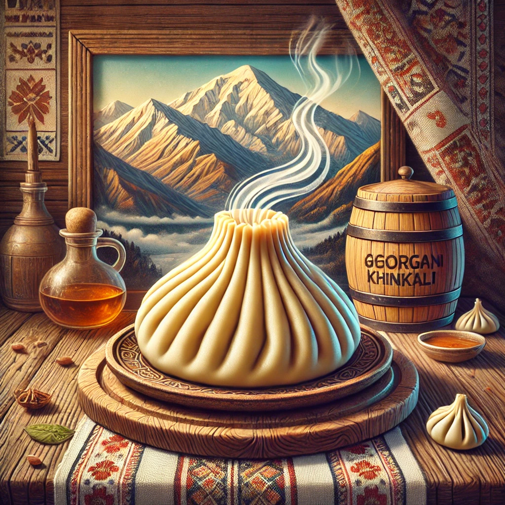

ცოტა რამ ხინკლის შესახებ:
ხინკლის დამზადება სათავეს იღებს აღმოსავლეთ საქართველოს მთიან რეგიონებში.
მისი გამოგონების პატივი მიეწერებათ როგორც მოხევეებს, ასევე ფშაველებს, მთიულებს და ხევსურებს.
უძველესი წესით ხინკალი მზადდება მსხვილად დაკეპილი ხორცით. მთიან რაიონებში ასეთი წესით ხინკალს დღემდე ამზადებენ.

ფასანაურის ხინკალს გამოარჩევს რამდენიმე მახასიათებელი:
დიდი ზომა - ფასანაურის ხინკალი ტრადიციულ ხინკალთან შედარებით უფრო დიდი და შიგთავსით მდიდარია.
ხორცის შიგთავსი - ხორცის ნაკლებ ცხიმიან და ნატურალურ შიგთავსს იყენებენ, რაც განსაკუთრებულ გემოს სძენს.
ცომის ტექსტურა - ფასანაურის ხინკალს უფრო სქელი და მტკიცე ცომი აქვს, რაც კარგად ინახავს შიგთავსს.
სუპის სიუხვე - შიგნით მეტია წვნიანი (სუპი), რაც გემოს კიდევ უფრო მდიდარ და ხარბს ხდის.